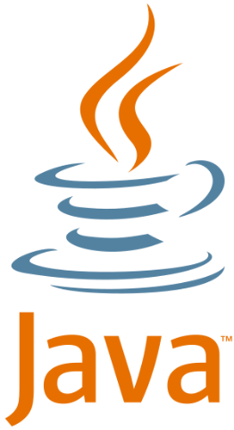
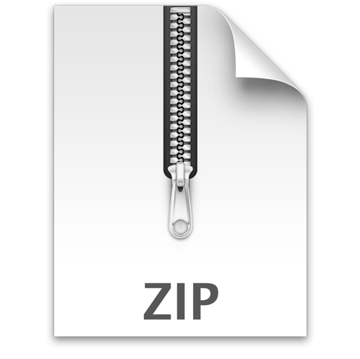
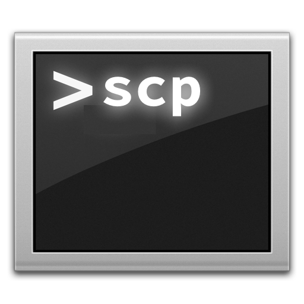
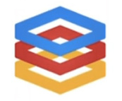
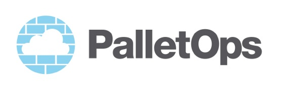

Deployment as a Service: Continuous Deployment Using Cloud Based Infrastructure Toby Clemson and Pete Hodgson
Outline Background and Motivation A Commit's Journey to Production Version Control Build System Build Test Package Publish Artifact Store Compute Provider Provisioning and Deployment Scripts Deployment as a Service Future Plans and Ideas Conclusions
Background and Motivation Started a project, RosettaJVM serving two purposes: An attempt to get as many JVM languages as possible into one codebase A web application to provide analytics and visualisations of language composition of projects on Github Collaboration on the project happened during hacknights Wanted contributors to see their changes go to production immediately after a pull request had been merged: Fast feedback cycle Gratification in the space of a 2 hour meetup => Continuous deployment to production => All in the cloud to make it interesting
A Commit's Journey to Production: Version Control Things to consider Paranoia/compliance issue around hosting code offsite Cost (TCO) Feature set (e.g. code review, integration into ALM)
A Commit's Journey to Production: Build Tool Things to consider Declarative vs. procedural Complimentary to technical stack Existing plugins
A Commit's Journey to Production: CI Server Things to consider Support for private repos Triggers Cost (TCO) Platform support (e.g. iOS builds) Pipeline support
A Commit's Journey to Production: Packaging Tool   Things to consider Your platform e.g. don't deploy debs to windows Pre/postinstall scripts Versioning Support for upgrading vs. an immutable approach
A Commit's Journey to Production: Artifact Storage  Things to consider The rest of your tooling e.g. jars => artifact repos, zips => S3 Versioning Security/compliance issues e.g. access from prod, storing code externally
A Commit's Journey to Production: Compute Service  Things to consider Internal or External Cloud? What do you need beyond compute? e.g. load balancing, DNS, storage, monitoring, scaling... Automation API Performance Reliability
A Commit's Journey to Production: Provisioning/Deployment  Things to consider Dry-run report Off-the-shelf modules for common dependencies Server-Agent model vs. Standalone Beware the alien artifact
Deployment as a Service An experiment Advantages: Changing version or scaling nodes is just a POST request Deployment data as an API Chaos monkey scenario Disadvantages: Log information not in build tool Extra piece of infrastructure
Future Plans and Ideas True pipeline using git marker branches Configuration management external to deployer Blue-green deployment Deployment status Environment aggregator micro-service Prebuilt AMIs
Conclusions Choose your own adventure Continuous deployment is possible using only cloud based components CI is becoming an expectation for open source projects